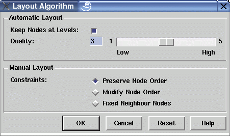

Layout Algorithm Dialog Window
This dialog window is used to control the graph layout algorithm (automatic layout with edge crossing reduction) and interactive fine-tuning operations (manual layout).
By default, the automatic layout algorithm keeps the nodes at their current levels when a new layout is calculated. This behavior can be switched off by deselecting check button "Keep Nodes at Levels". In this case, nodes are assigned back to their initial level when the layout algorithm is started again with menu Layout/Improve All. This will undo previous vertical fine-tuning operations. The quality slider is used to adjust the accuracy of the layout algorithm by adjusting the number of iterations. The higher the slider value, the better the layout results which may give you a more reduced number of edge crossings. But a high setting may need an enormous computing time, especially for very large graphs. In this case you should first try a low setting to see if the result is suitable for your needs.
You can use fine-tuning (manual layout) to move a node in horizontal direction or in vertical direction to another level (for top-down and bottom-up layout orientations, exchange horizontal and vertical for the other orientations). To move a node, select it with the left mouse button and hold the button pressed while moving the mouse. In all cases of fine-tuning, uDraw(Graph) will keep a hierarchical graph visualization, so moving a node usually affects the position of other nodes, causing some layout rearrangements. Read more about graph layout and hierarchical visualizations in the concept chapter.
Some constraints can be set for fine-tuning to control the horizontal movement of a node. The three constraints specify the behavior when a node that is moved with the mouse will touch its left or right neighbour node at the same level. A neighbour node is touched when the minimal node distance has been reached.
- In default mode "Preserve Node Order", the touched node is moved as well to keep the order of nodes.
- In mode "Modify Node Order", the moved node and the touched node exchange their position as soon as there is enough space to do so. This mode is useful to modify the order of nodes on a level, e.g. to remove edge crossings by hand.
- In the third mode "Fixed Neighbour Nodes", fine-tuning stops as soon as a neighbour node is touched. This is useful to protect the position of neighbour nodes.
Dialog Elements of the Layout Algorithm Window
-
Keep Nodes at Levels
To choose whether or not the graph nodes are kept at their current level when a new graph layout is calculated by starting the layout algorithm with menu Layout/Improve All. Nodes may be assigned to a new level by using vertical fine-tuning. If you want to set the nodes back at their initial levels with the next run of the layout algorithm, then deselect this check button. -
Quality
To set the accuracy of the graph layout algorithm to some abstract value between 1 and 5. The higher the slider value, the better the layout results (reduced number of edge crossings). Be careful with a high value in combination with very large graphs, this may take an enormous computation time. -
Preserve Node Order
Fine-tuning constraint for horizontal node movement to keep the order of nodes at a level. -
Modify Node Order
Fine-tuning constraint for horizontal node movement to exchange the order of nodes at a level. -
Fixed Neighbour Nodes
Fine-tuning constraint for horizontal node movement to freeze the position of all other nodes at a level. -
Ok
Push button to accept the current settings of this dialog window. Without pressing this button, modifications to these options are not considered. -
Cancel
Push button to close the layout algorithm dialog window without performing any action. -
Reset
Push button to undo any modification to these options which were not confirmed using the "Ok" push button yet. So reset goes back to the current settings. -
Help
Push button to start the online help system with this page.